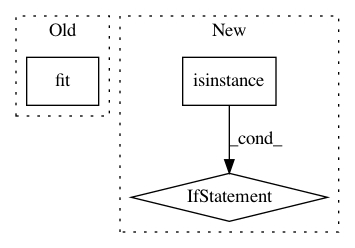

be24159959672c32abb31697e721d96ae6ffaf97,keras/wrappers/scikit_learn.py,BaseWrapper,fit,#BaseWrapper#Any#Any#,97
Before Change
self.compiled_model_ = copy.deepcopy(self.model)
self.compiled_model_.compile(optimizer=self.optimizer, loss=self.loss)
history = self.compiled_model_.fit(
X, y, batch_size=self.train_batch_size, nb_epoch=self.nb_epoch, verbose=self.verbose,
shuffle=self.shuffle, show_accuracy=self.show_accuracy,
validation_split=self.validation_split, validation_data=self.validation_data,
callbacks=self.callbacks)
self.config_ = self.model.get_config()
self.weights_ = self.model.get_weights()
After Change
if self.build_fn is None:
self.model = self.__call__(**self.filter_sk_params(self.__call__))
elif not isinstance(self.build_fn, types.FunctionType):
self.model = self.build_fn(
**self.filter_sk_params(self.build_fn.__call__))
else:
In pattern: SUPERPATTERN
Frequency: 3
Non-data size: 3
Instances
Project Name: keras-team/keras
Commit Name: be24159959672c32abb31697e721d96ae6ffaf97
Time: 2016-02-27
Author: ipod825@gmail.com
File Name: keras/wrappers/scikit_learn.py
Class Name: BaseWrapper
Method Name: fit
Project Name: scikit-optimize/scikit-optimize
Commit Name: 9cdd21160f4b4352b05f7b7ce9f0f63506c585c9
Time: 2017-04-17
Author: iaroslav-ai@users.noreply.github.com
File Name: benchmarks/bench_ml.py
Class Name: MLBench
Method Name: evaluate
Project Name: nilearn/nilearn
Commit Name: 6164294177c34f257dbd354cf97d643597255a0d
Time: 2013-06-12
Author: abraham.alexandre@gmail.com
File Name: nisl/decomposition/multi_pca.py
Class Name: MultiPCA
Method Name: fit